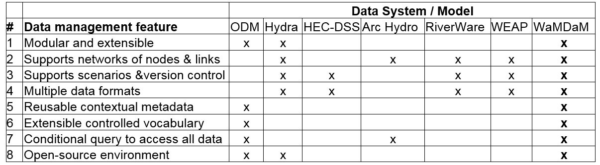

Design features¶
We synthesized the design requirements (features, hereafter) from prior approaches in Section 2 with a focus on enabling the key steps to analyze and synthesize data for a water systems model in four use cases.
Use cases¶
Water resources modelers and researchers seek to solve integrated water management problems in an area of interest (Brown et al., 2015). They select a modeling tool or develop a new one to solve simulation or optimization water management problems in a study area within a scope like as hydro-economic (Harou et al., 2009), hydro-ecologic (Alminagorta et al., 2016), or priority-based allocation (Sehlke and Jacobson, 2005). Then modelers search among available datasets for input data the model needs in their study area. Having obtained some data, the modeler next needs to determine which datasets and values to use in their model. The molders also need to identify how natural and engineered system components are connected and flow directions among components. Modelers often create modeling scenarios to represent different physical, operation, and socio-economic representations in a systems model. Modelers then seek to identify and communicate differences for changes in network topology, metadata, and data values between the scenarios. We identified four use cases that cover these data query, comparison, and model building activities (Heumann, 2008).
The use cases are formed by four questions that motivate a WaMDaM design to enable them given that none of the prior approaches has the capability to consistently answer all of them altogether.
- What data are available to develop a model in a particular watershed?
- How do data values for properties of system components differ across datasets?
- What differences are there across datasets in connectivity of natural and built infrastructure components in a particular area?
- What differences are there in network topology, metadata, and input data between two scenarios of a model instance?
Synthesized design features and definitions¶
To answer the use case questions, a new information model must have eight design features that are supported partially in existing systems. Supporting all eight features intends to enables users to systematically query and compare; data availability for models, data values, network connectivity, and scenarios to assist modelers in preparing data for building models.
Table 1: The identified requirements (i.e., features) that are supported by select data systems and water resources models for a generalized method to organize water management data. An “x” indicates that the feature is supported. WaMDaM is designed to support all of the features. 
Features definitions¶
Feature 1¶
The first feature represents multiple system components (e.g., reservoirs, demand sites, canals) in reusable data objects (i.e., classes or modules) with properties or attributes to describe their qualitative or quantitative data (Connolly and Begg, 2010; Wurbs, 2012; Zagona et al., 2001). This modular representation allows users to reuse existing objects and their attributes or add new ones to satisfy the extensible use (Connolly and Begg, 2010; Goodall et al., 2011; Kokkonen et al., 2003; Pokorný, 2006). Most existing data systems and water management models have modular designs but often modularity is limited to a pre-defined set of supported object types.
Feature 2¶
The second feature represents the spatial configuration of system components as networks of nodes (junctions or points) and links between nodes (arcs, connections, curves, lines, or edges of a directed graph) (HydroLogics, 2009; Rossman, 2000; Zeiler, 1999). Networks help users to organize and then search groups of system components that are related for a purpose (e.g., flow of water through connected pipes) for a particular domain (e.g., drinking water supply) in a specific spatial boundary (Loucks et al., 2005). Most the existing data systems support this feature but they use different structures to manage the connectivity of nodes and links.
Feature 3¶
The third feature supports scenarios that represent many physical, operation, and socio-economic configurations of a systems model for current and proposed water management alternatives. These scenarios track or version control changes in the baseline networks and data values. A scenario represents one or more of potentially three changes to a network: i) change in topology like adding or removing an infrastructure component, ii) change in metadata like changing a method or data source of an attribute values, iii) or change data values for one or more attributes of a component. Many of the existing systems support scenarios but no systems support all the three scenario changes.
Feature 4¶
The fourth metadata feature provides ancillary information to help users interpret data values of component attributes. Metadata also helps users maintain the data provenance that is needed to track the history and context of i) sources, ii) methods, iii) people, and iv) organizations that contributed to create a data value (Campbell et al., 2013; Carata et al., 2014; DCMI, 2013; Goodman et al., 2014; Gray et al., 2005; Horsburgh et al., 2008; Pokorný, 2006). Separating metadata elements for water management data improves prior approaches that represented them in one table that accept user-specified field-value metadata pairs like in HydraPlatform (Meier et al., 2014) and HarmoniRib (Refsgaard et al., 2005) and are more difficult to directly query, access, and synthesize. Most of the reviewed systems support adding some metadata but often metadata is either optional or not supported explicitly under those four categories.
Feature 5¶
The fifth feature supports multiple data types that modelers use to represent physical, operational, and descriptive attributes of system components: time series, multi attribute series (i.e., arrays or multi-columns), numeric and descriptor parameters, seasonal parameters, and categorical values. An attribute may apply to all network components as one global attribute or to individual components. For example, a time series of inflow applies to one reservoir component while a second time series of evaporation applies to all reservoirs in the network. Many existing systems support a few data types but store them in binary objects and do not describe data with metadata. The WaMDaM multiple data types feature allows users to store and access different types of data values for properties of systems components.
Feature 6¶
The sixth feature provides controlled vocabularies (CVs) as sets of suggested optional terms with definitions for object type, attributes, and names of nodes and links to encourage users to relate and retain their native terms across data sources (Laniak et al., 2013). The CUAHSI CVs system (http://his.cuahsi.org/mastercvreg/cv11.aspx) provides a list of controlled terms for hydrology related observations.
Feature 7¶
The seventh feature supports conditional data queries to allow users to load and retrieve subsets of data based on selected water system components, attributes, metadata, networks, scenarios, and data types in space and time without the need for a third-party software. Many data systems have built-in functionality, which limits the ability to freely query and compare subsets of data and metadata. Supporting conditional queries allows users to query, synthesize, and compare subsets of water management data and use retrieved data in models.
Feature 8¶
The eighth feature uses free and open-source software and requires publishing the source-code in GitHub to allow liberal use of the code, promote reproducibility, and help others further advance the method (Easterbrook, 2014; Gil et al., 2016; Goodman et al., 2014). Many existing data systems are proprietary, require specific tools to access their data, source-code is not available, and there is limited documentation.
These eight features are incompletely supported by existing methods. Supporting all eight features enables users to systematically query and compare; data availability for models, data values, network connectivity, and scenarios to assist modelers in preparing data for building models. The next section describes how WaMDaM is implemented to support these eight described data features to enable integrated data analysis for modeling through the four identified use cases.